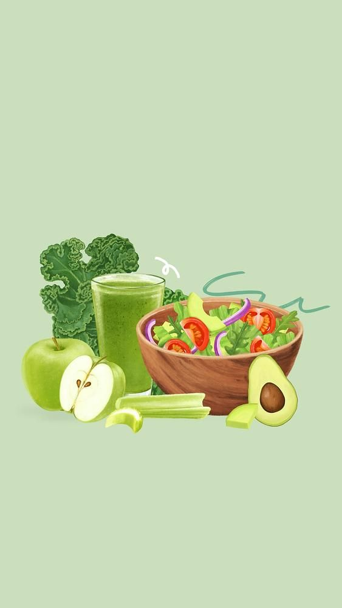
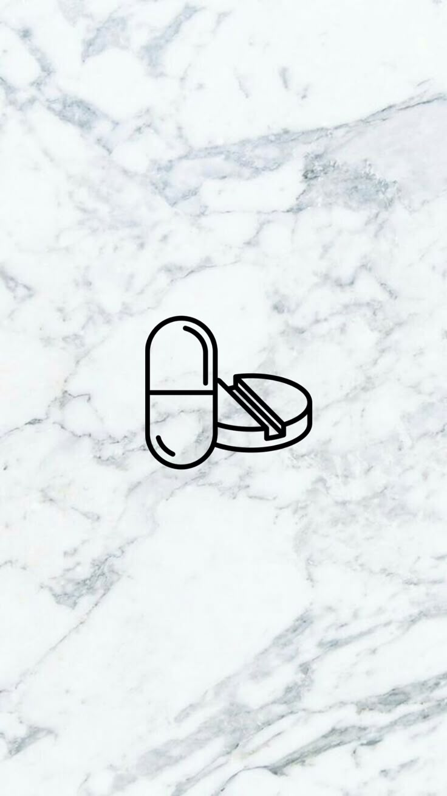
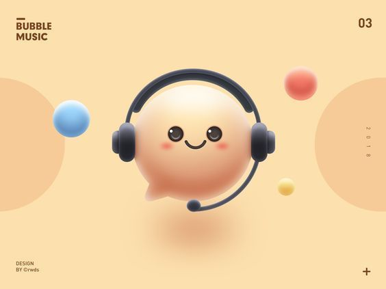

Diet Chart
Your prescribed diet by your doctor.

Medication Chart
Your prescribed medications by your doctor.

Chatbot
Talk to our AI-powered recovery coach anytime.
Support Circle
Your doctor, emergency contacts, and insurance in one place.
Hugs
Need a hug? Click here for comfort 💖